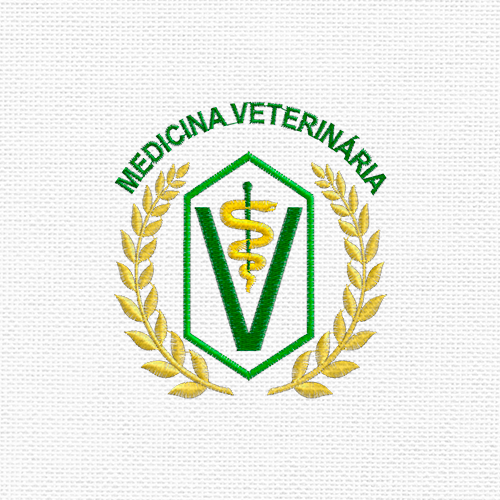
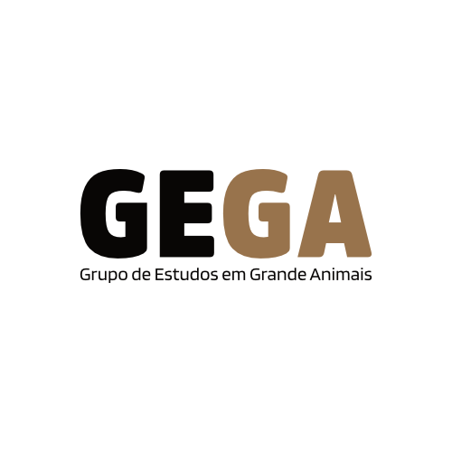
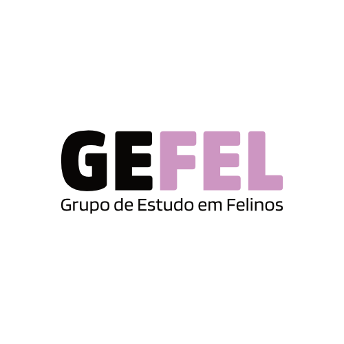
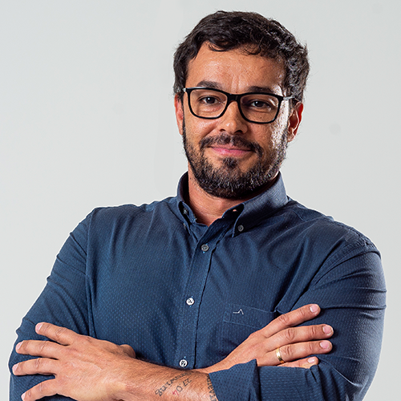
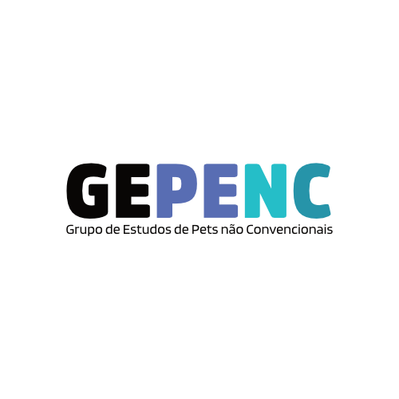
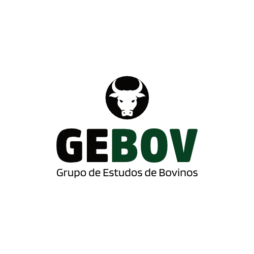
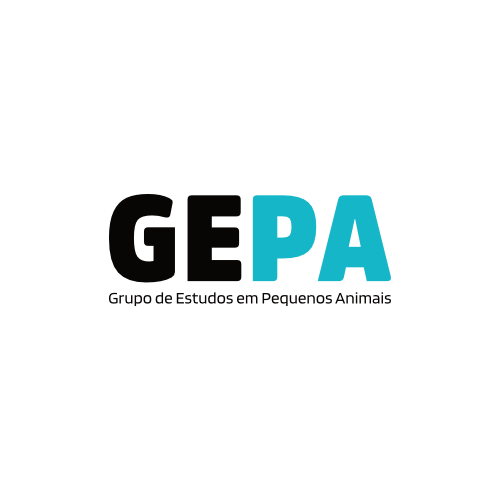
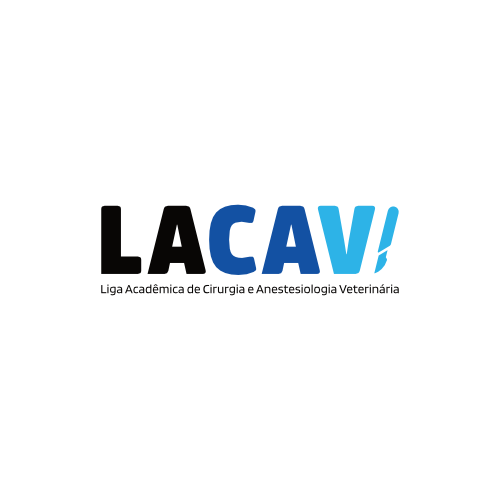
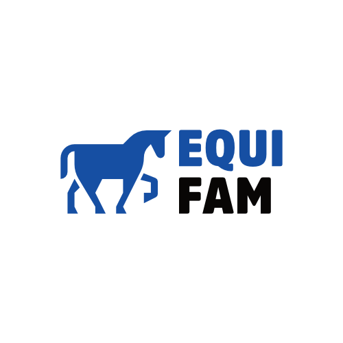

1° dia (26/02)
Mundo Vet Experience
Roda de conversa
com varios médicos veterinários
500 vagas
Cursos Convidados
8h00 às 11h10 ou 19h00 às 21h45
Auditório Jamil Salomão
Temas
“Certezas e incertezas. Que rumo tomar”, com Eunice da Rocha Fabri (Farmacêutica). “Competência é questão de escolha”, com Profª Drª MV. Vanessa Páfaro. “Insistir, persistir, resistir e nunca desistir”, com Profª Drª MV. Daniela Pereira (Oftalmologista). “Porque estreita é a porta e há poucos que a encontram”, com Drª MV. Especialista Karine Batagin Bacchin (Cirurgiã e Neurologista). “O caminho para o centro cirúrgico”, com Dr. MV. Raphael Lovaglio Possente (Cirurgião). “Do limão à caipirinha”, com Drª MV. MSC. Marcela Scherr (Oncologista).Mini Currículos
Eunice da Rocha Fabri: Farmacêutica Magistral. Vanessa Páfaro: Médica Veterinária Radiologista; Mestrado e Doutorado em Diagnóstico por Imagem Unesp - Jaboticabal. Daniela Pereira: Graduada em Medicina Veterinária pela Universidade de Alfenas (2001); Possui especialização em oftalmologia clínica e cirúrgica e especialização em microcirurgia ocular pela Qualittas; Professora do curso de especialização em Oftalmologia Veterinária da ANCLIVEPA –SP; Professora e monitora dos cursos do GENOV; Pioneira em Americana/SP e região no atendimento exclusivo e especializado em oftalmologia, desde o ano de 2009; Pioneira no Brasil na utilização da técnica de crosslinking do colágeno corneano; Diretora Clínica do Centro Avançado de Oftalmologia Veterinária OLHARES petp. Karine Batagin Bacchin: Graduada pela unipinhal em junho/2002; Pós graduada em Clínica Médica e Cirúrgica pela Qualittas em 2004; Pós graduada em Neurologia Clínica pelo BIOETHICUS em 2008; Pós graduada em Acupuntura pelo Instituto Jaqueline PEKER em 2013; CEO do Animed Hospital Veterinário desde 2005. Dr. MV. Raphael Lovaglio Possente: Cirurgião de tecidos moles e oncológicos. Marcela Scherr: Graduada em Medicina Veterinária pela Universidade Estadual Paulista (Unesp/Botucatu) 2005; Mestre em Genética do Câncer – Unicamp 2010; Doutoranda em Oncogênese e Imunoterapia - Unicamp; Professora do curso de especialização em Medicina Felinos - módulo Oncologia ANCLIVEPA – Campinas; Pioneira em Americana/SP e região no atendimento exclusivo e especializado em Oncologia Veterinária, Imunoterapia Oncológica e Oncogeriatria.
2° dia (27/02)
GEGA | Eutanásia
de suínos em granja
com Laya Kannan Silva Alves
500 vagas
Cursos Convidados
8h00 às 9h30
Auditório Jamil Salomão
Possui graduação em Zootecnia pela Universidade Federal de Uberlândia (2018) e
Mestrado em Ciências pela Universidade de São Paulo (USP). Atualmente é pós-graduanda a nível de
doutorado no Programa de Pós-Graduação em Nutrição e Produção Animal (VNP/FMVZ/USP), com período
sanduíche na North Carolina State University. Atua como coordenadora de Ensino, Pesquisa, Inovação e
Extensão no Laboratório de Pesquisa em Suínos (LPS/FMVZ/USP). Suas principais linhas de pesquisa com
enfoque na produção de suínos são: modelagem matemática, gestão e controle de custos, indicadores
econômicos, uso de aditivos melhoradores de desempenho, desenvolvimento e treinamento de equipes
para garantir a eutanásia oportuna.

GEFEL | TIVA
em felinos
com Rafael Conagin e Caroline Cintra
500 vagas
Cursos Convidados
9h50 às 11h10
Auditório Jamil Salomão
Rafael Conagin (Formado pela Anhanguera educacional 2010; Sócio fundador TivaVet;
Pós graduado em clínica médica em 2012; Professor da Pós graduação em Tiva pela Ebramev; Professor
da Pos graduação em anestesiologia pela Ebramev e IBvet; Palestrante Nacional e Internacional de
Tiva; Pós Graduando em Ventilação Mecânica).
Caroline Cintra (Formada pela primeira turma de Medicina Veterinária da FAM; Membro da equipe
TivaVet).

Perfil e conduta
do Médico Veterinário
com Coord. Alberto França Filho
500 vagas
Cursos Convidados
19h00 às 20h30
Auditório Jamil Salomão
Coordenador do curso de Medicina Veterinária e da Clínica-escola Veterinária da
Faculdade de Americana - FAM.

GEDIDEC | Paciente com sobrepeso.
E agora, é hormonal?
com Dra Fernanda Bignotto Piazza e Dra Vanessa Páfaro
500 vagas
Cursos Convidados
20h30 às 21h45
Auditório Jamil Salomão
Mini curriculo Dra Fernanda: Não informado;
Mini curriculo Dra Vanessa: Médica Veterinária Radiologista; Mestrado e Doutorado em Diagnóstico por
Imagem Unesp - Jaboticabal.
3° dia (28/02)
GEPENC | Aspectos importantes
no atendimento de répteis - casos clinicos
com Giuliano do Amaral Setem
500 vagas
Cursos Convidados
8h00 às 9h30
Auditório Jamil Salomão
Graduado pela Universidade Federal de Uberlândia; Estágio supervisionado na
Brisbane Bird Vet - Brisbane/Austrália; Pós graduado em Clínica e Cirurgia de Pets não
Convencionais; Cirurgião Voluntário - Festival das Pipas - Gujarat/India - 2023; Proprietário “Dr
Giu - Medicina Especializada de Pets não Convencionais” - Piracicaba/SP; Atua como Clínico e
Cirurgião Volante no interior de São Paulo.

GEAS | Anestesia
em aves
com Everton dos Santos Cirino
500 vagas
Cursos Convidados
9h30 às 11h10
Auditório Jamil Salomão
Formado em 2004 na Universidade Metropolitana de Santos (UNIMES); Pós-graduado em
Clínica Médica e Cirúrgica de Animais Selvagens e Exóticos, pelo Instituto
Qualittas em 2009; Pós-graduado em Anestesiologia Veterinária, pelo Instituto Qualittas em 2017;
Médico Veterinário do Parque Ecológico Municipal de Americana desde 2008.

GEBOV | Metano:
O antropoceno e os ruminantes
com Annelise Aila Gomes Lobo
500 vagas
Cursos Convidados
19h00 às 20h30
Auditório Jamil Salomão
Graduada em Ciência animal pela Universidade Federal de Viçosa em 2015; Mestre da em Qualidade e Produtividade Animal pela Faculdade de Zootecnia e Engenharia de Alimentos (FZEA) da Universidade de São Paulo (USP); Atualmente, é pesquisadora PostDoc na USFCAR

GEPA | Fisioterapia em
pequenos animais Teórico-prática
com MV. Mara Martins
500 vagas
Cursos Convidados
20h30 às 21h45
Auditório Jamil Salomão
Graduação em medicina veterinária (FAJ, 2014); MBA em Gestão de negócios pela
Esalq-USP; Pós-graduação em Fisioterapia e Fisiatria pelo Instituto Bioethicus; Especializada em
Ozonioterapia pelo Instituto Bioethicus; Sócia-Fundadora da FitPet - Maior Centro de Longevidade Pet
do Brasil.

4° dia (29/02)
Perfil e conduta
do Médico Veterinário
com Coord. Alberto França Filho
500 vagas
Cursos Convidados
8h00 às 9h30
Auditório Jamil Salomão
Coordenador do curso de Medicina Veterinária e da Clínica-escola Veterinária da
Faculdade de Americana - FAM.
LACAV | Fraturou
e agora?
com Daniel Tonin Benedetti
500 vagas
Cursos Convidados
9h30 às 11h10
Auditório Jamil Salomão
Médico Veterinário graduado pela Universidade de Alfenas; Especialista em Clínica
Cirúrgica - Qualittas; Mestre Dept. Cirurgia - FMVZ-USP; Professor Técnica
cirúrgica/Cirurgia/Anatomia cirúrgica Faculdade Max Planck (2012/2016); AOVET certificate
Basic/Advanced/Master; AOVET Membership; Cirurgião volante especializado em Ortopedia Veterinária
desde 2009; Credenciado em aplicação de células tronco; Franqueado Ortopedia360.

GEPENC | Emergência e
Intensivismo em Pets Não Convencionais
com Marianna Brosch de Assis
500 vagas
Cursos Convidados
19h00 às 20h30
Auditório Jamil Salomão
Graduada em Medicina Veterinária pela PUC de Minas Gerais (campus Poços de
Caldas), pós-graduada em Clínica, Manejo e Preservação de Animais Selvagens pela ANCLIVEPA de São
Paulo. Atualmente trabalha exclusivamente com o atendimento clínico de pets não convencionais na
região de Hortolândia.
EQUIFAM | As necessidades e
acompanhamento de cavalos atletas
com M.V. David Nilo Jorge Filho
500 vagas
Cursos Convidados
20h30 às 21h45
Auditório Jamil Salomão
Formado pela Universidade Estadual de Londrina em 2008,
atua como veterinário clínico de equinos.
